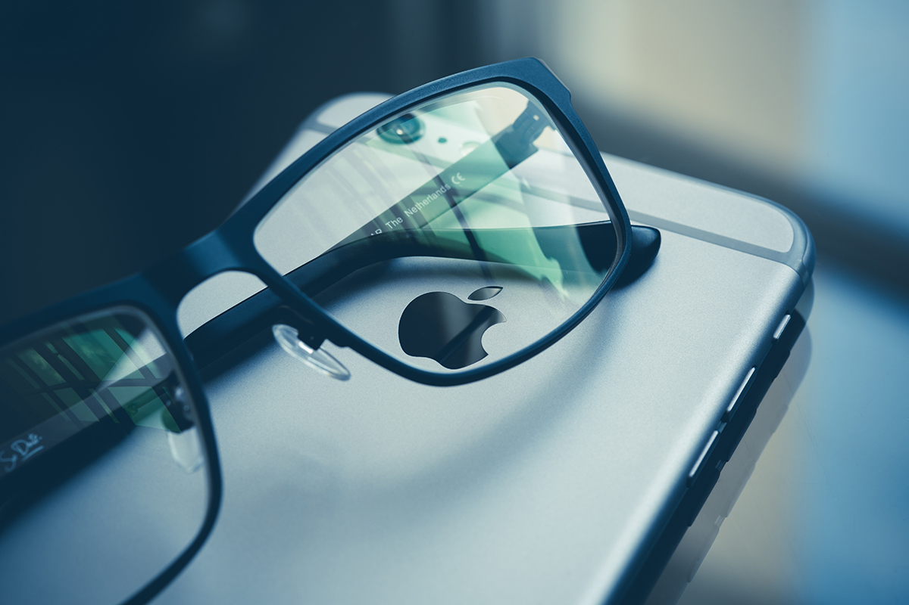
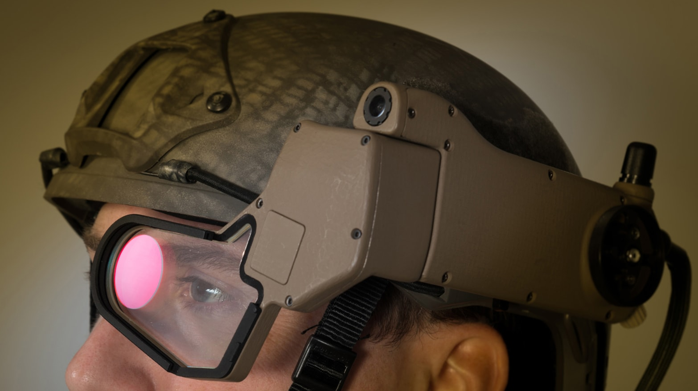

Augmented Reality has been shown to repair one’s vision loss. According to Wearable Technologies, Augmented Reality or (AR) is very helpful for people with intense vision loss. AR has helped people with doing many activities in a normal life such as watching TV, reading/writing, and viewing others around you.
“Acesight electronic glasses employ Augmented Reality (AR) technology and features two full HD displays that float in front of each eye. A tracking auto focus camera between the eyes captures everything the user looks at and presents everything in magnified form up to 15x normal size.“ (Augmented Reality Smartglasses Deliver True Visual Independence for People with Severe Vision Loss - Wearable Technologies)
Augmented Reality brings many positives for military training. Augmented Reality training will place military soldiers into an environment where they need to make quick battlefield decisions.
